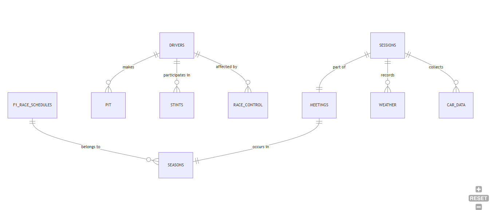

Database Model
The model separates repeated reference values from event-level facts. Countries and circuits are lookup tables. Meetings describe race weekends. Sessions represent practice, qualifying, and race events. Fact tables such as car_data, weather, pit, stints, and race_control reference session and meeting keys.

Query Workbench
Use the templates or write a custom query. The normalized data loads into PGLite and runs as real PostgreSQL queries in the browser.
drivers, sessions, meetings, car_data, weather, pit, stints, and race_control.Result Output
Run a query to view results.
Data Quality Overview
These checks translate racing data into the language of study data management: completeness, allowed values, referential integrity, timing consistency, and exception tracking.
Referential integrity
Session and meeting keys connect fact tables back to the event calendar.
Allowed value checks
Session type, tyre compound, race flag, DRS state, and rainfall values can be validated against expected domains.
Outlier review
Pit durations, telemetry speeds, RPM values, and track temperatures are reviewed for impossible or unusual values.
Report readiness
Query templates produce reusable summaries for driver performance, team comparison, weather, strategy, and operations review.